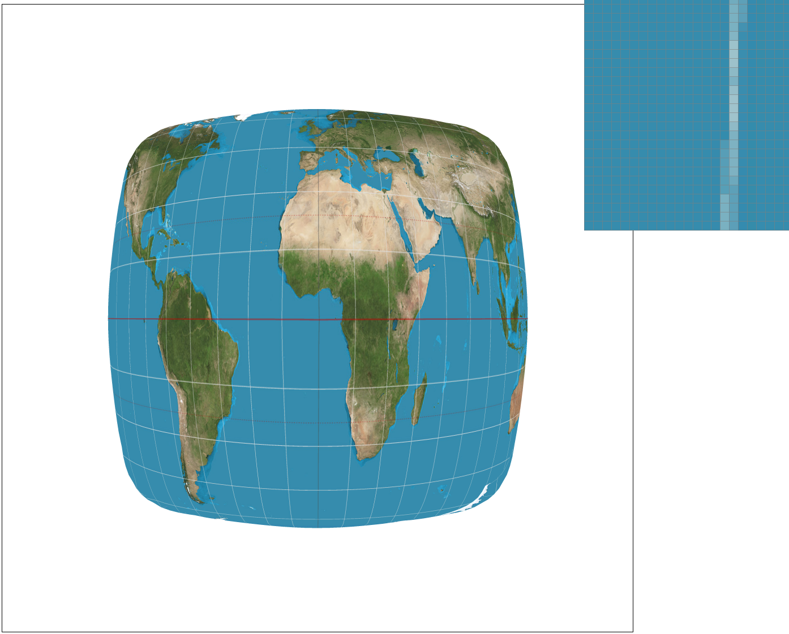

Throughout this assignment, I learned how to implement triangle rasterization, supersampling methods, color interpolation, and texture mapping methods. From the first section of the assignment, I learned how pixels are sampled from an image and sent to a frame buffer to be displayed. In the second part of the assignment I learned how useful barycentric coordinates can be for both color interpolation and mapping pixel coordinates into texture space. I enjoyed this assignment as it allowed me to apply what I learned in lecture to coding. It was a bit challenging to think of edge cases that we did not discuss in class, such as in texture mapping where in bilinear level sampling you might end up indexing outside of the texture image. From this, and other obstacles, I definitely learned how important it is to clamp values. I was able to solidify my understanding of lecture topics from completing this assignment.
During this task, I learned how to implement triangle rasterization. I started by creating a bounding box around the triangle by finding the minimum x coordinate and y coordinate of the three vertices passed into rasterize_triangle. Then I iterate through each column/pixel (x) for each row (y) up until the maximum x and y coordinate passed into the function respectively. For each pixel, I offset the x and y coordinates by 0.5 in order to sample the middle of the pixel. Then, using the three line test, I determined whether the point resided within the triangle by seeing if it was in the ‘inside’ edge of all lines. If this condition was satisfied, I filled in the sample_buffer with the appropriate color at the index representing the pixel location.
While there are more efficient ways to sample the pixels, my algorithm is no worse than one that checks each sample within the bounding box of the triangle. I am able to assert this because when I iterate through pixels by starting at the minimum x coordinates and y coordinates of the vertices and iterating up until the maximum x and y coordinates of the same vertices. The algorithm is better than one that iterates over the entire image height/width.
Supersampling is very useful because it allows us to eliminate jaggies by averaging, in this case, Color values to better represent a pixel and result in smoother edges. Here is a walkthrough of my supersampling algorithm:
I started with the same basic structure as my basic triangle rasterization where I create my bounding box and iterate through each x,y pixel coordinate within the box
Within each pixel, I sampled every sqrt(sample_rate) x sqrt(sample_rate) coordinate and conducted the 3 line test for every sample. If the sample fell within the lines, I filled in the Color value into the sample buffer at the appropriate index corresponding to the sample position. The Color value is an important data structure as well as it stores the rgb values at each sample. The sample buffer serves as an important data structure in rasterization because it is the 1D array that stores the value of Color at every sample taken within the bounding box. The indices of the sample buffer were able to represent the sample coordinates relative to the width of the image.
With the sample buffer filled with the appropriate Color values, I followed with downsampling. During this step, I iterated through each pixel starting from 0,0 in order to copy over the data for each pixel to the frame buffer. For each pixel, I took all of the sample points and averaged the color values in order to then assign the averaged Color to the pixel in the frame buffer. The frame buffer is a 1D array of size width x height of the image. It stores the final Color value for each pixel to be displayed on the screen.
Here is an outline of the modifications I made to the original rasterization pipeline:
I scaled the original size of the sample buffer by sample rate because I needed to allocate space to store the color of all samples within all pixels.
I added another loop inside of iterating through the pixels, in order to sample sqrt(sample_rate) x sqrt(sample_rate) points within each pixel.
I modified the indexing for the sample buffer to account for supersampling.
In order to resolve the sample buffer to the frame buffer, I took the samples for each pixel and averaged them to store the final color value into the frame buffer. This differs from the original as the original version copied over the sample buffer color for each pixel to the frame buffer directly.
I found the most challenging part of this part to be figuring out how to index within the sample buffer with super sampling, however I was able to draw out several supersampling examples and discover that it is similar to how it was previously y*width + x except almost scaled by sqrt(sample_rate). With supersampling, the index is (sqrt(sample_rate) * y * width * sqrt(sample_rate)) + (sqrt(sample_rate) * sy * width)) + (x*sqrt(sample_rate) + sx), where sx and sy are the fractional value within a pixel.
Here is an example of how supersampling effects how the image appears. In the top images the zoom focuses on the right vertex of red triangle. In the bottom images the zoom focuses on the top left corner of the cube.
|
|
|
|
|
|
|
|
As we increase the sample rates from 1,4, to 16, we notice that the jaggies continually improve. We observe this effect because we are storing more Color values for each pixel and averaging them which allows us to better represent the Color at each pixel location. The downsampling therefore results in a blurred effect on the edges and an overall smoother visual.
In this task, I completed the transformation functions to return a 3x3 matrix for translating, scaling, and rotating. Here is an example of the cubeman I created:
In this version, cubeman is waving with the left arm. In the implementation, cubeman is made up of different polygons, however they are wrapped in transformations in order to have shapes within the same component be transformed together. Therefore, modifying a part of the cubeman is easier because each limb is placed relative to a certain point.
Barycentric coordinates, normally listed as alpha, beta, and gamma, are a way to define a point within a triangle based upon its proportional distance to each vertex. Alpha, beta, and gamma act as weighted proportions essentially and their sum is 1. For example, if the calculated barycentric coordinates for a point is alpha = 1, beta = 0, gamma = 0, then the coordinate resides exactly on vertex 1 of the triangle.
Calculating the barycentric coordinates can be useful because they allow us to map values to a point (i.e. Color, texture, etc.) created by a sum of proportions of the values at each of the three vertices. An example triangle is shown below, where each of its vertices is either red, blue, or green:
Here is the rendering of the color wheel, which is created from interpolation of colors using barycentric coordinates calculated from the proportionate sub-triangle areas created by the point within the original triangle:
Pixel sampling involves going through each pixel in an image and determining what color to display. Here is an overview of how I applied pixel sampling to perform texture mapping:
I recycled the structure of supersampling rasterization with interpolating colors with barycentric coordinates. In order to add texture mapping, I used the barycentric coordinates for each sample to calculate the sample’s texture coordinates u,v in texture space from the texture coordinates of the triangle’s three vertices.
I created a new SampleParams object in order to pass in the u,v coordinates as well as the current level sampling method and pixel sampling method to the sample method in the Texture class.
Here is an overview of how I implemented sampling:
Nearest: From the u,v texture coordinates that I passed into SampleParams, I rounded each u and v to the nearest integer value. From the rounded coordinates, I was able to call get_texel in order to retrieve the appropriate texel that the original u,v coordinates are closest to.
Bilinear: This method is more challenging than nearest sampling, however, it can improve the image since it averages the texels of the 4 nearest neighbors of u,v. I first determined the texels from the mipmap at u,v 4 nearest neighbors by calling get_texel on every u, v combination of floor(u),ceil(u) and floor(v),ceil(v). I then calculated the fractional distance of u-floor(u) and v-floor(v) in order to perform a linear interpolation on floor(u), floor(y) to ceil(u), floor(y) and floor(u), ceil(y) to ceil(u), ceil(y) and then a final vertical linear interpolation on the first two interpolations results to get the final interpolated texture color, hence bilinear.
As a note, I created a helper function that allowed me to do lerp on Color objects since color is essentially a 3D vector with addition and multiplication operations.
Here is an example of using the sampling method of nearest vs bilinear at a sample rate of 1 (zoomed in on a longitudinal line):
|
|
|
Here is an example of using the sampling method of nearest vs bilinear at a sample rate of 16 (zoomed in on a longitudinal line):
|

|
|
From the images above, I can see more aliasing produced from nearest texture sampling in both sampling rates of 1 and 16. The textures are blended and blurred more smoothly in bilinear sampling in comparison to nearest sampling. Therefore, the largest difference between the two methods will be noticeable when an image contains a lot of high frequency textures and small texture details.
Level sampling is used in texture mapping in order to reduce the amount of aliasing and increase performance. It involves determining what mip level/resolution texture image to sample a texture from depending on the coordinates change in texture between itself and its next coordinates to the right or below it. Each increase in level results in ½ resolution of the prior texture image. This helps remove some of the high frequency textures that cause aliasing. Here are descriptions and algorithm of the level sampling methods I implemented:
Zero-Level Sampling: This acts as our control, where we are just texture mapping from the original high-resolution texture image provided. Therefore, we just use the original texture map at mipmap[0] and use either of the pixel sampling methods in the prior section.
Nearest-Level Sampling: Nearest-level sampling involves using the difference in textures between the texture color at the current coordinate (x,y) and (x+1,y) and (x,y) and (x,y+1), which is equivalent to (u,v) and (du/dx, dv/dx) and (u,v) and (du/dy, dv/dy), respectively. I scale the difference vectors by the size of the height and width of the high-resolution image. I am then able to determine how much I should downsample the image by in both the x and y directions and then we take the maximum downsampling factor, L. With this value, I can calculate the level, D by computing log2(L) and pass it into the pixel sampling methods. Overall, this method uses the nearest x and y texture coordinates to see how much to downsample the original high resolution image.
Linear-Level Sampling: This sampling method is very similar to nearest-level sampling in that we retrieve D the same way. The level, however, is treated as a continuous value once calculated. I sample the texture coordinate at floor(D) and ceil(D) in the requested pixel sampling method. From the results, I perform a linear interpolation on both of the colors using the fractional value of D-floor(D). Doing a linear interpolation on both values allows us to combine colors from different level mipmaps to better represent the texture coordinate. Note:An obstacle I came across was the linear sampling trying to sample texture coordinates outside the height and width of the texture image. Therefore, I had to make sure to clamp my values to be between 0 and mipmap.size()-1
There are now three modifiers that I have implemented for antialiasing: pixel sampling methods, level sampling methods, and supersampling. Here is a comparison of how well each of these techniques works:
Speed: The speed of the pixel sampling is quite efficient for nearest pixel sampling because it performs a one-to-one mapping/sampling of each pixel. On the contrary, the speed slows down when doing bilinear pixel sampling because for each pixel we are now sampling 4 texture coordinates. The speed of level sampling is also dependent on the method where zero-level and nearest-level sampling are approximately equivalent since both sample a texture coordinate on one mipmap, however, linear-level sampling is slower because you sample the texture coordinates on two different level mipmaps. For supersampling, the speed of rendering slows down significantly as one increases the sampling rate.
Memory: For pixel sampling, the memory usage depends on how much it costs to store the high resolution image. Level sampling definitely has a higher memory cost due to having to store multiple mipmaps corresponding to different levels. Additionally, increasing sampling rate will increase the memory usage necessary for rasterization because we now have image height*width*sampling rate number of values we need to store.
Antialiasing Power: A combination of all three antialiasing techniques provides optimal antialiasing power. Trilinear filtering at a higher sampling rate will produce a visually smooth image with minimal aliasing. Supersampling serves as a good antialiasing method for edges or areas of high frequency in an image. A combination of pixel sampling and level sampling provides antialiasing power for texture mapping and areas of high differences in textures
Here is an example image that I applied different combinations of pixel sampling methods and level sampling methods. Sample rate was 1 for all of the following. Additionally the zoom shows the left corner of the animal's mouth where the whiskers are coming out.
|
|
|
|
|
|